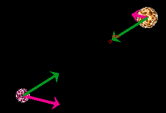

of a star is equal to
of a star is equal to  dt where is the star's
velocity. Thus, the work dW done on one of the stars during
an infinitesimal time interval dt by the gravitational force
dt where is the star's
velocity. Thus, the work dW done on one of the stars during
an infinitesimal time interval dt by the gravitational force
 acting on the
star is equal to
acting on the
star is equal to
The following Activities are for the Binary Star System applet. Make sure you know how the applet functions by consulting Help, Assumptions, and ShowMe under Applet Help on the applet's Help menu.
Activity 1. The purpose of Activity 1 is to observe the relationship between the stars' speeds and the kinetic energy KE of the binary star system.
RESET the applet. Display the stars' velocity vectors, but not any of the other vectors.
Move the mouse pointer to the tip of the longer one of the two velocity arrows and, when the pointer changes to a cross-hair, click and drag the tip of the velocity vector until it points horizontally and has maximum length, as illustrated in Figure 1 below.
Measure this length by means of the ruler. Place one end of the ruler at the center of the star where the vector's tail end is located and place the ruler's other end at the vector's tip, as illustrated in Figure 1. Let's say the ruler gives the reading 120 for the length of the vector. Record the value of KE displayed in the bottom left corner of the applet window.
Figure 1
Also measure the length of the kinetic energy portion (red) of the energy column with the scale. You can make it easier to read the scale by dragging the scale downward until its zero is lined up with the lower edge of the red portion of the energy column. The KE value red with the scale should agree with the more exact numerical value displayed at the bottom to within the precision available on the scale.
Now drag the end of the ruler that is located at the tip of the velocity vector back towards the center of the star until the ruler reads half of the original length, i.e., 60. Then drag the tip of the velocity vector so that it coincides with the end of the ruler. The velocity vector's length is now 60 or close to it.
Compare the value of the kinetic energy now to that recorded earlier. It should be nearly one fourth of that recorded earlier because the kinetic energy is proportional to the square of the magnitude of the velocity and because this magnitude has been reduced to half its original value.
Activity 2. The purpose of this Activity is to observe, qualitatively, how the work done on the stars by the gravitational forces acting on the stars is related to the change in the system's kinetic energy.

Figure 2
RESET the applet. Display the stars' velocities and the gravitational forces acting on the stars, as in Figure 2 above. Adjust the velocities, by dragging the tip of one of the two velocity vectors, so that it forms an angle less than 90o with the force vector for the same star, similar to what is shown in Figure 2. Select the Trace button to have the stars' paths displayed when the motion starts.
PLAY the motion. Observe the angle between the velocity vector of a star and the force vector for that star as the motion proceeds. At the same time, observe how the kinetic energy of the system changes. Try to express your observations in a few sentences.
Lesson. At first, while the stars are getting closer, the angle between the velocity and the force is less than 90o and the motion is getting faster and the kinetic energy is increasing. Later, when the stars are moving farther apart, the angle between the velocity and the force is greater than 90o and the motion is slowing down and the kinetic energy decreasing.
Remember that work is defined as the scalar product of force and
displacement. During an infinitesimal time interval dt, the
displacement d of a star is equal to dt where is the star's
velocity. Thus, the work dW done on one of the stars during
an infinitesimal time interval dt by the gravitational force
acting on the
star is equal to
dW =  dt = Fv
cos q dt
dt = Fv
cos q dt
where q is the angle between the force and the velocity. If q < 90o, then cos q > 0 and therefore the work dW positive. Note that the angle between the force and the velocity is either less or greater than 90o for both stars at the same time, so that the work done on both stars is either positive or negative at the same time.
The applet shows that when positive work is being done on the system the total kinetic energy is increasing and when negative work is being done the total kinetic energy is decreasing. This is the way it should be according to the work-kinetic energy theorem.
Activity 3. The purpose of this activity is to investigate a motion in which no work is being done on the stars.
RESET the applet. Display the velocity and force vectors, and select the Trace button.
The motion will be circular if the initial velocities are perpendicular to the line joining the two stars and if KE = 0.5×|PE|. The values of KE and PE are displayed near the bottom left corner of the applet window. Adjust the initial velocities so that these conditions are met as nearly as you can.
PLAY the motion, and observe the velocity and force vectors during the motion as well as the KE value. In a few sentences, express what you observe and how it relates to the work-kinetic energy theorem.
If the velocity and force vectors are perpendicular at all times, the scalar product of the two vectors is 0 at all times since cos 90o = 0. In this case, no work is being done on the system and the work-kinetic energy theorem implies that the total kinetic energy of the system remains constant.